Engine
249 parts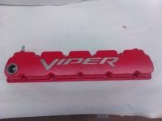
Out of stock000, 04 Viper Left Valve Cover 05037155af
Part # 05037155AF
$200.00
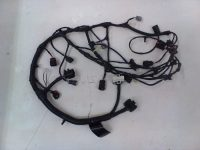
Out of stock03 - 04 VIPER ENGINE WIRE HARNESS 05037287AE ENGINE SIDE
Part # 05037287AE
$495.00
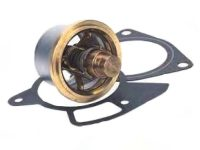
Out of stock180 Degree Race Thermostat for 1992-2002 Dodge Viper - P4876900
$111.00
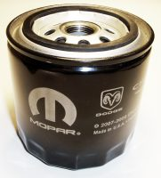
Out of stock1992 - 1995 Dodge Viper RT/10 Oil Filter - 05281090 5281090AB
Part # 05281090 5281090AB
$18.99
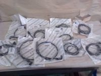
Out of stock1992 - 1995 Dodge Viper RT/10 Spark Plug Wire Set - 04638758
Part # 4638758
$179.99

1992 - 1995 Dodge Viper RT/10 Throttle Cable Assembly - 5245657
$165.00

1992 - 1996 Dodge Thermostat to Engine By-Pass Hose - 05245810
$75.00

1992 - 1996 Dodge Thermostat to Engine Tube Hose - 5245811
Part # 5245811
$100.00
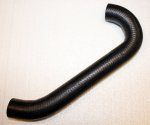
1992 - 1996 Dodge Viper By-Pass Tube to Water Pump Hose - 05245812
Part # 5245812
$99.00

1992 - 1996 Dodge Viper Radiator to Water Pump Hose - 04709200
$95.00

1992 - 1996 Dodge Viper RT/10 A/C Drive Belt - Q4070775
Part # Q4070775
$80.00
 Out of stock
Out of stock1992 - 1996 Dodge Viper RT/10 Alternator Assembly - 4642031
Part # 4642031
$249.99
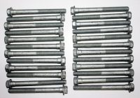
1992 - 1996 Dodge Viper RT/10 Head Bolt Set - 06034952
$159.00
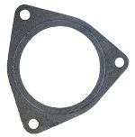
Out of stock1992 - 1996 Dodge Viper RT/10 Thermostat Gasket -05245231
Part # 5245231
$16.00
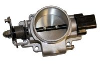
Out of stock1992 - 1996 Dodge Viper RT/10 Throttle Body - 05245241
Part # 5245241
$195.00

1992 - 1996 Dodge Viper RT/10 Water Passage Gasket - 05245643
$29.00
 Out of stock
Out of stock1992 - 1996 Dodge Viper RT/10 WITHOUT A/C Drive Belt - 05245316
Part # 05245316
$45.00

1992 - 1996 Dodge Viper Tube to Radiator Hose - 04642036
Part # 4642036
$85.00
 Out of stock
Out of stock1992 - 1997 Dodge Viper Engine to Water Valve Hose - 4763974
Part # 4763974
$39.00

1992 - 1998 Dodge Viper RT/10 Air Cleaner Housing 04848054
Part # 04848054
$95.00
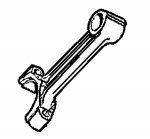
1992 - 1999 Dodge Viper Connecting Rod - 05245366
$140.00
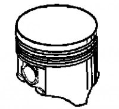
1992 - 1999 Dodge Viper Standard Piston - 05245142AB
Part # 5245142AB
$150.00
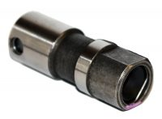
1992 - 1999 Dodge Viper Valve Tappet Lifter - 04713439
$54.00
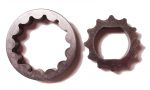
1992 - 2000 Dodge Viper Oil Pump Rotor Kit - 05245525
$239.00
 Out of stock
Out of stock1992 - 2002 Dodge Viper 195 Degree Thermostat - 53041078AC
Part # 053041078AC
$150.00
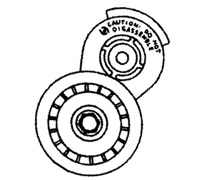
1992 - 2002 Dodge Viper Accessory Drive Belt Tensioner Package - 04626444AB
$149.99

1992 - 2002 Dodge Viper Air Filter - 05245265AE
Part # 05245265AD 05245265ae
$99.00

1992 - 2002 Dodge Viper Coolant Pressure Tank - 04709389
Part # 4709389
$109.00
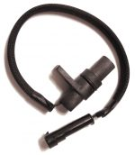
1992 - 2002 Dodge Viper Crankshaft Position Sensor - 04848416
Part # 04848416 04642925 PC199
$159.00
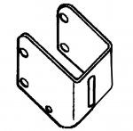
1992 - 2002 Dodge Viper Engine Mounting Bracket - 04796376
$45.00
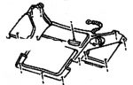
1992 - 2002 Dodge Viper Hood Silencer Pad - DISCONTINUED
$999.99
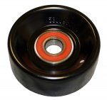
1992 - 2002 Dodge Viper Idler Pulley - 53009508
$32.25
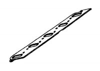
1992 - 2002 Dodge Viper Intake Gasket - 05245194AC
Part # 05245194AC
$49.00

1992 - 2002 Dodge Viper Intake Manifold Schrader Valve - 05245193
Part # 05245193
$43.00
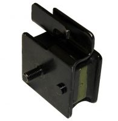
1992 - 2002 Dodge Viper Left Engine Mount Insulator - 04642617
Part # 04642617
$54.00
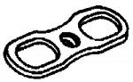
1992 - 2002 Dodge Viper Lifter Tappet Aligning Yoke - 05245169
$14.00
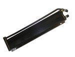
1992 - 2002 Dodge Viper Oil Cooler - 04643826AC
$495.00

1992 - 2002 Dodge Viper Oil Pressure Sending Unit - 56026779AB
$50.00
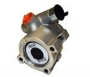
1992 - 2002 Dodge Viper Power Steering Pump Assembly- 04642153
$495.00
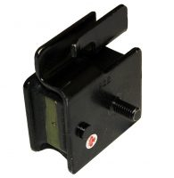
Out of stock1992 - 2002 Dodge Viper Right Engine Mount Insulator - 04643530
Part # 04643530
$44.00
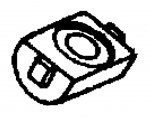
1992 - 2002 Dodge Viper Rocker Arm Pivot - 05245336
Part # 05245336
$4.00
 Out of stock
Out of stock1992 - 2002 Dodge Viper RT/10 GTS Smooth Intake Hoses - P5007362
Part # P5007362
$282.00
 Out of stock
Out of stock1992 - 2002 Dodge Viper Spark Plug Set - SP0RC12LYC
Part # SP0RC12LYC
$40.00
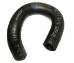
1992 - 2002 Dodge Viper Water Valve to Heater Core Hose - 04642555
Part # 04642555AB
$49.00
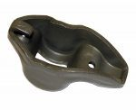
1992 - 2004 Dodge Viper Rocker Arm - 05245335
$35.00

1992 - 2004 Dodge Viper Spark Plug Wire Separator Loom - 05245237AB
Part # 5245237AB
$19.95
 Out of stock
Out of stock1992 - 2005 Dodge Viper Flywheel Mounting Bolt - 06035811
Part # 6035811
$19.00
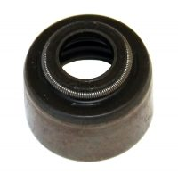
Out of stock1992 - 2006 Dodge Viper Intake Valve Guide Seal - 53009886
Part # 53009886
$4.00

1992 - 2006 Dodge Viper Main Bearing .10 Over - 05096022AA
Part # 05096022AA
$80.00
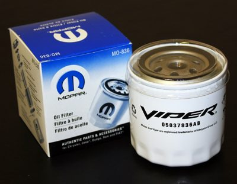
1992 - 2006 Dodge Viper Oil Filter - 05037836AB
Part # 5037836AB 05037836AA
$45.99
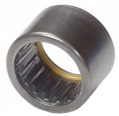
1992 - 2010 Dodge Viper Pilot Bearing - 53009181AB
Part # 53009181AB
$52.00
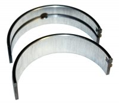
Out of stock1992 - 2010 Dodge Viper Standard Main Bearing - 04723538AD
Part # 04723538AD
$100.00
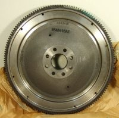
Out of stock1992-2002 Dodge Viper Flywheel - 04643416AB
Part # 04643416AB
$580.00
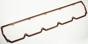
1992-2002 Dodge Viper Valve Cover Gasket - 05245095
$110.00
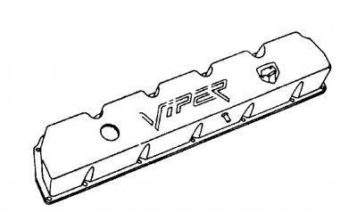
1993 - 1995 Dodge Viper RT/10 Left Valve Cover - 5245653
$255.00
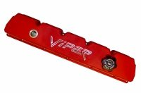
Out of stock1993 - 1995 Dodge Viper RT/10 Right Valve Cover - 04740772
Part # 04740772
$255.00
Out of stock
1994 - 1996 Dodge Viper Ratchet Oil Cap - 04573497AB
Part # 04573497AB
$13.00
 Out of stock
Out of stock1994 - 1996 Dodge Viper RT/10 Water Pump - 05245465
Part # 05245465AB
$349.99
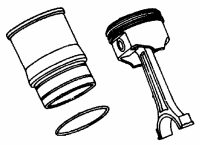
1995 Dodge Viper Cylinder Assembly #6 - 05245976
$384.00

1995-1996 Dodge Viper RT10 Air intake Baffel 04709361
Part # 04709361
$84.00

1996 - 2001 Dodge Viper GTS-R CNC-Ported Cylinder Head - P4876838AB
Part # P4876838AB
$3,500.00

1996 - 2001 Dodge Viper GTS-R Exhaust Valve - P5007514
Part # P5007514
$26.00
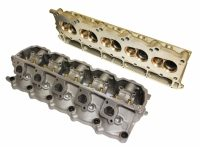
1996 - 2001 Dodge Viper GTS-R PAIR CNC-Ported Cylinder Heads - P4876838AB
Part # P4876838AB
$7,000.00

1996 - 2002 Dodge Viper A/C Drive Belt - 04763795AD
Part # 4763795AD
$87.90

1996 - 2002 Dodge Viper Accessory Drive Belt (non-AC) - 04763863AC
Part # 4763863AC
$75.00
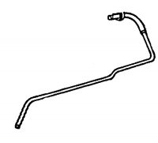
1996 - 2002 Dodge Viper Coolant Tank to Water Pump Hose - 04763877
Part # 4763877
$199.99
 Out of stock
Out of stock1996 - 2002 Dodge Viper GTS RT/10 Engine Oil Indicator (Dipstick) - 04763791AB
Part # 04763791AB 04763791AD
$35.00
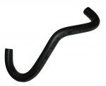
1996 - 2002 Dodge Viper Heater Core to Engine Hose - 04763975AC
Part # 04763975AC
$49.00
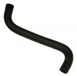
1996 - 2002 Dodge Viper Heater Return Hose - 05245459
$15.00
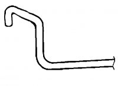
1996 - 2002 Dodge Viper Heater Return Tube - 05245458AC
Part # 05245458AC
$90.00
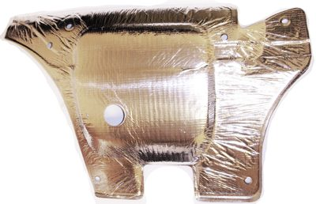
1996 - 2002 Dodge Viper Left Hood Heat Shield - 04848025AB
Part # 4848025AB
$30.00
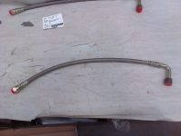
Out of stock1996 - 2002 Dodge Viper Oil Cooler Inlet Line - 04848310
Part # 04848310
$175.00
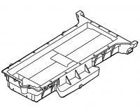
1996 - 2002 Dodge Viper Oil Pan - 04763744
Part # 04763744
$575.00

1996 - 2002 Dodge Viper Oil Pan Gasket - 05037022AA
$289.99

1996 - 2002 Dodge Viper Outlet to Water Pump (Lower) Hose - 04763584
Part # 4763584
$105.00

1996 - 2002 Dodge Viper Temperature Sending Unit - 04848110
$75.00

1996 - 2002 Dodge Viper Thermostat Gasket - 04763839AC
Part # 04763839AC
$22.00

1996 - 2002 Dodge Viper Thermostat to Inlet (Upper) Hose - 04763585
Part # 4763585
$79.00

1996 - 2002 Dodge Viper Throttle Body Gasket - 04848126
$10.95

1996 - 2002 Dodge Viper Throttle Cable - 04763969
$149.00
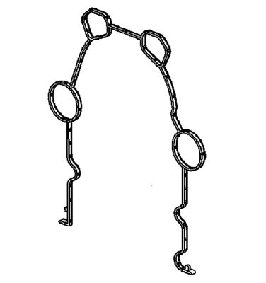
1996 - 2002 Dodge Viper Timing Cover Gasket - 04763745AB
Part # 4763745AB
$39.00
 Out of stock
Out of stock1996 - 2004 Dodge Viper Air Idle Speed Motor Control Valve - 04778637AB Up to 8/24/2004
Part # 04778637AB
$175.00

1996 - 2006 Dodge Viper Camshaft Sensor - 05245084 aftermarket
Part # 05245084 PC142
$135.00

1996 - 2006 Dodge Viper Head Bolt Set of 24 - 06035471
Part # 06035471
$280.00

1996 - 2006 Dodge Viper NEW Camshaft Sensor - 05245084 *FACTORY*
Part # 05245084 PC142
$999.99

1996 - 2006 Dodge Viper Used Camshaft Sensor - 05245084 used
$85.00
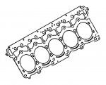
1996 - 2010 Dodge Viper Head Gasket - 05037734AB
Part # 5037734AB CS5814-051
$159.99
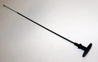
1996 -( RT/10 Only ) Dodge Viper RT/10 Engine Oil Indicator (Dipstick) *used* 05245899
$20.00
 Out of stock
Out of stock1996 Dodge Viper RT/10 Plug Wire Set - 04798736AB
Part # 4798736AB
$154.00

1996.5 - 2002 Dodge Viper Spark Plug Wire Set - 04883365AA
Part # 4883365AA
$199.00

1997 - 2002 Dodge Viper 1.7 Roller Rocker Assembly - P5007049
Part # P5007049
$1,999.99
Out of stock
1997 - 2002 Dodge Viper Oil Pan Drain Plug & O-Ring - 04763738 04763739
Part # 04763738 - 04763739
$65.00

1997 - 2002 Dodge Viper U-Nut .25-20 - 06029074
Part # 06029074
$3.50
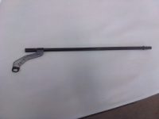
1997-2002 Dodge Viper Engine Oil Indicator TUBE Mopar Part 4763792AC
Part # 4763792AC
$99.00

2000 - 2006 Dodge Viper Hydraulic Tappet Lifter - 5004042AA
Part # 5004042AA
$225.00
 Out of stock
Out of stock2000 DODGE VIPER MODULE, ENGINE CONTROL JTEC 4865406AC
Part # 4865406AC
$950.00
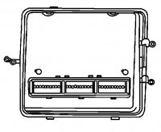
2001 Dodge Viper Engine Controller Module - 04865667AG
Part # 04865667AG
$1,149.00
 Out of stock
Out of stock2003 - 2006 Dodge Viper Accessory A/C Drive Belt - 05037206AD
Part # 05037206AD
$52.00

2003 - 2006 Dodge Viper SRT10 Alternator Assembly - 05037198AA
Part # 05037198AA
$630.00

2003 - 2006 Dodge Viper SRT10 Brake Clutch Pedal Assembly - 05290890AG
Part # 05290890AG
$650.00

2003 - 2006 Dodge Viper SRT10 Engine Oil Indicator (Dipstick) - 05037214AE
$16.00

2003 - 2006 Dodge Viper SRT10 Hood Silencer Pad - 04865684AC
$225.00

2003 - 2006 Dodge Viper SRT10 Left Exhaust Manifold - 05037197AD
Part # 05037197AD
$1,100.00
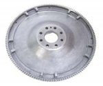
2003 - 2006 Dodge Viper SRT10 Lightweight Flywheel - P4510169
Part # P4510169
$810.00
2003 - 2006 Dodge Viper SRT10 Oil Cooler Inlet Line - 05290004AD
$159.00
2003 - 2006 Dodge Viper SRT10 Oil Cooler Outlet Line - 05290001AD
$625.00

2003 - 2006 Dodge Viper SRT10 Oil Pan - 05037159AI
$995.00

2003 - 2006 Dodge Viper SRT10 Pressurized Coolant Bottle - 05043002AB
$150.00

2003 - 2006 Dodge Viper SRT10 Right Exhaust Manifold - 05037196AD
Part # 05037196AD
$1,100.00

2003 - 2006 Dodge Viper SRT10 Spark Plug Set - RC12ECC
Part # RC12ECC
$59.00
 Out of stock
Out of stock2003 - 2006 Dodge Viper SRT10 Throttle Cable - 05037288AD
Part # 05037288AD
$145.00
2003 - 2006 Dodge Viper SRT10 Timing Case Cover - 05037036AM
$1,495.00
2003 - 2006 Dodge Viper SRT10 Upper Radiator Hose - 05264985AA
Part # 05264985AA
$53.00

2003 - 2006 Dodge Viper SRT10 Water Pump - 05037164AE
Part # 5037164AE
$1,650.00
2003 - 2006 Dodge Viper Valve Spring Retainer Lock 33003521
Part # 33003521
$3.00

2003 - 2006 Gen III Viper V10 150 HP Performance Upgrade Kit - 5156137
Part # P5156137
$8,449.00
2003 - 2010 Dodge Viper Engine Oil Cooler Connector - 05037316AC
$15.00
2003 - 2010 Dodge Viper HVAC Resistor - 05014212AA
$229.00
 Out of stock
Out of stock2003 - 2010 Dodge Viper SRT10 Idler Pulley - 04792581AB
Part # 04792581AB
$35.00

2003 - 2010 Dodge Viper SRT10 Lower Radiator Hose - 05264986AF
Part # 05264986AB
$170.00
 Out of stock
Out of stock2003 - 2010 Dodge Viper SRT10 Radiator Assembly - 5264994AC
Part # 5264994AC
$800.00
2003 - 2010 Dodge Viper SRT10 Right Engine Mount Assembly - 4643530AB
Part # 4643530AB
$55.00

2003 - 2010 Dodge Viper SRT10 Spark Plug Heat Shield - 05037104AB
Part # 5037104AB
$14.50

2003 - 2010 Dodge Viper Water Pump Gasket - 05037171AB
Part # 5037171AB
$14.00
 Out of stock
Out of stock2003 - 2013 Dodge Viper SRT10 Oil Cooler - 05290014AE
Part # 05290014AE
$260.00
2003 - 2013 Dodge Viper Thermostat Housing - 05037174AD
Part # 05037174AD
$345.00
2003 - 2014 Dodge Viper Thermostat Housing Gasket 05037173AA
Part # 05037173AA
$23.00

2003 - 2017 Dodge Viper 185 Degree Thermostat - 05037344AA
$349.00
2003 Dodge Viper SRT10 Crankshaft - 05037050AC
Part # 05037050AC
$2,999.99
2003 Dodge Viper SRT10 Spark Plug Wire Set - 05093789AA
$215.00
 Out of stock
Out of stock2003-2006 Viper Flywheel Including Ring Gear - 05037226AA
Part # 05037226AA
$138.00
2003-2006 Viper Flywheel Including Ring Gear - 05037226AB
Part # 05037226AB
$999.99

2003-2006 Viper SRT10 Power Kit 3-Inch Race Exhaust - P4510176
Part # P4510176
$799.00

2004 Dodge Viper SRT10 Spark Plug Wire Set - 05135171AA
$345.00
2004-2006 Dodge Viper Crankshaft Bolt - 6036207AA
$18.00

2005 - 2013 Dodge SRT Viper Knock Sensor - 05033316AB
$129.00

2005 - 2013 Dodge Viper SRT Viper Crankshaft Position Sensor - 05033307AC
$38.00

2005 Dodge Viper SRT10 Spark Plug Wire Set - 05166556AA
$342.00
2006 - 2010 Dodge Viper Oil Pan Drain Bolt - 06507741AA
$4.00
2006 - 2013 Dodge SRT Viper Oil Pan Drain Plug & O-Ring - 06507741AA
$15.25

2006 Dodge Viper SRT10 Spark Plug Wire Set - 05135171AA
$600.00
 Out of stock
Out of stock2008 - 2010 Dodge Viper Accessory A/C Drive Belt - 05037862AD
Part # 05037862AD
$34.00
2008 - 2010 Dodge Viper Air Filter - 05038070AA
$44.00

2008 - 2010 Dodge Viper SRT10 Alternator Assembly - 05037198AC
$685.00
2008 - 2010 Dodge Viper SRT10 Brake Clutch Gas Pedal Assembly - 05290926AD
Part # 05290926AD
$2,000.00

2008 - 2010 Dodge Viper SRT10 Heater Return Hose - 05030628AD
Part # 5030628AD
$135.00

2008 - 2010 Dodge Viper SRT10 Left Exhaust Manifold - 05037705AC
Part # 05037705AC
$550.00

2008 - 2010 Dodge Viper SRT10 Power Steering Pump with Pulley - 6800411AA
Part # 05093985AA
$849.00
2008 - 2010 Dodge Viper SRT10 Powertrain Control Module - 05029932AF
$1,400.00

2008 - 2010 Dodge Viper SRT10 Right Exhaust Manifold - 05037704AC
Part # 05037704AC
$550.00
2008 - 2010 Dodge Viper SRT10 Standard Piston Ring Package - 68030676AA
$250.00
2008 - 2010 Dodge Viper SRT10 Upper Radiator Hose - 05030603AB
Part # 5030603AB
$25.00

2008 - 2010 Viper Flywheel Including Ring Gear - 05037965AB
Part # 05037965AB
$405.00
Out of stock
2008 - 2010 Viper SRT10 Race Engine Controller - P5155254AB
Part # P5155254AB
$1,375.00

2008 - 2013 Dodge Viper Spark Plug Wire Set - 68027788AB
$105.00

2008 - 2013 Dodge Viper SRT10 Spark Plug Set - SVRE10PMC5
Part # SVRE10PMC5
$110.00

2008 - 2017 Dodge SRT Viper Oil Filter - 5038041aa 5038041ab
Part # 5038041AA
$39.99
2010 Dodge Viper Gen 4 ACR-X Crate Engine - 638 HP+
Part # P5155669
$27,999.00
2013 - 2014 Dodge SRT Viper Engine Cover Set USED RED/BLACK
$495.00
Out of stock
92 - 02 Dodge Viper Air Idle Speed Motor Gasket - 05245373
Part # 05245373
$11.00

92 - 10 DODGE VIPER WASHER FOR EXHAUST MANIFOLD STUD 06034595
Part # 06034595
$3.00
Out of stock
94 - 02 DODGE VIPER FUEL LINE 05245792 AT INTAKE MANIFOLD
Part # 05245792
$199.00

Dodge Viper GTS-R 8.5 mm Spark Plug Wire Set - P4876844
Part # P4876844
$76.00

008: 2003 - 2006 Viper Air Filter - 05037294AB Dodge
$103.00
1992 - 1995 Dodge Viper RT/10 Camshaft Sensor - 053006563
$159.00
1992 - 1995 Dodge Viper RT/10 Oil Pan Gasket - 05245691AB AFTERMARKET
$289.99
1992 - 1996 Dodge Viper Oil Pressure Switch - 33004791ab
$89.00
1992 - 1996 Dodge Viper RT/10 Crankshaft - 05245103
$2,419.00
1992 - 1996 Dodge Viper RT/10 Head Gasket - A/M Cometic
$299.99
1992 - 1996 Dodge Viper Temperature Sending Unit - 56027012
Part # 56027012
$45.00
1992 - 2006 Dodge Viper Exhaust Valve Guide Seal - 53009887
$14.80
1992 - 2010 Dodge Viper Engine Mount Heat Shield - 04643546
$25.00
1992 - 2010 Dodge Viper Front Crankshaft Seal - 05245135
$63.00
1992-2002 Dodge Viper Heater Water Control Valve 4642554
Part # 4642554
$59.99
1994 - 1996 Dodge RAM V-10 Crankshaft Position Sensor - 56041041 53006562
$175.00
1994 - 2004 Dodge Viper Rocker Arm Pedestal Retainer - 04848550
$4.00
1996 - 2002 Alternator Assembly - 04848662AB 4848662 Dodge Viper
$249.00
1996 - 2002 Dodge Viper Intake Valve - 04763747
$23.00
1996 - 2002 Dodge Viper Lower Gasket Set - 05017565AB
$329.00
1996 - 2002 Dodge Viper Oil Filter Adapter - 04763736AC
$425.00
1996 - 2002 Dodge Viper Oil Filter Adapter Gasket - 05245086AC
$35.00
1996 - 2002 Dodge Viper Oil Pick Up Screen - 04763740
$105.00
1996 - 2002 Dodge Viper Oil Pressure Switch - 04848295AB
Part # 4848295AB
$149.00
1996 - 2002 Dodge Viper Push Rod - 04848548AC
Part # 04848548AC
$6.70
1996 - 2002 Dodge Viper Right Valve Cover - 04763754AB
$231.00
1996 - 2002 Dodge Viper Timing Chain Kit - 04863827
$399.00
1996 - 2002 Dodge Viper Upper Gasket Set - 04882950AG
$749.00
Out of stock1996 - 2002 Dodge Viper Water Pump - 04763776AC
Part # 4763776AC
$1,250.00
Out of stock1996 - 2002 Dodge Viper Water Pump Gasket - 04763790AB
Part # 04763790AB
$29.95
1997 - 2003 Dodge RAM V-10 Crankshaft Position Sensor - 46027864 56027864
$175.00
1997 - 2006 Dodge Viper Coil / Ignition Pack Four Lead - 56032521AC
Part # 56032521AC
$295.99
1997 - 2006 Dodge Viper Coil / Ignition Pack Six Lead - 56032520AF
Part # 56032520AF
$140.00
1997 - 2008 Dodge Viper Oil Cap - 04648832AA
$25.00
1999 - 2002 Dodge Viper ACR Oil Filter Adapter - 04886503AD
$999.99
2003 - 2004 Dodge Viper SRT Viper Crankshaft Position Sensor - 04727451AA
$42.00
2003 - 2006 Dodge Viper SRT10 Intake Gasket - 05037217AC
Part # 5037217AC
$138.00
2003 - 2006 Dodge Viper SRT10 Intake Valve - 5037232AB
$21.00
2003 - 2006 Dodge Viper SRT10 Push Rod - 05037069AB
$5.00
2003 - 2006 Dodge Viper SRT10 Standard Piston Ring Package - 05086536AA
$402.00
2003 - 2006 Dodge Viper SRT10 Timing Chain Kit - 05086533AD
$900.00
2003 - 2006 Dodge Viper SRT10 Timing Cover Bolt & Washer - 00154934AA
$7.00
2003 - 2006 Dodge Viper SRT10 Valve Spring - 05004032AC
$7.00
2003 - 2006 Dodge Viper Valve Spring Retainer Cap 05037754AA
Part # 05037754AA
$4.00
2003 - 2006 Viper Air Cleaner Assembly 5037292aa 5037293aa 5037294ab dodge viper
$375.00
Out of stock2003 - 2010 Dodge Viper Oil Pressure Sending Unit - 05149064AA
Part # 05146064AA
$63.00
Out of stock2003 - 2010 Dodge Viper SRT10 Complete Lower Engine Gasket Set - 68026796AA
Part # 68026796AA
$145.00
Out of stock2003 - 2010 Dodge Viper SRT10 Left Engine Mount - 4642617AB
Part # 4642617AB
$82.00
2003 - 2010 Dodge Viper SRT10 Oil Pan Gasket - 05037163AF
$299.00
2003 - 2010 Dodge Viper SRT10 Rear Crankshaft Seal - 05037300AA
$89.00
2003 - 2010 Dodge Viper SRT10 Timing Cover Gasket - 05037067AD
$195.00
2003 - 2013 Dodge Viper OEM Motor Mount Isolator Bracket - 05037298AA
Part # 05037298AA
$101.00
Out of stock2003 Dodge Viper Module, Engine Controller, NEW OEM 4865501ak *ADD $125 CORE CHARGE*
$475.00
Out of stock2003-2006 Dodge Viper Line Power Steering Fan to Power Steering Pump
Part # 05290008AD
$39.00
Out of stock2003-2006 Dodge Viper New Crate Engine Deposit
$6,600.00
2003-2006 Dodge Viper SRT10 Valve Cover Gasket - 05037157AB
$52.00
Out of stock2003-2006 SRT10 OEM Air Filter
$50.00
2003-2006 Viper SRT10 Bell Housing 68028348AA
Part # 68028348AA
$349.99
2003-2006 Viper/Ram SRT10 Clutch Disc
$328.00
2004-2006 Dodge Viper SRT10 Crankshaft - 68171436AA
$5,700.00
2005 - 2010 Dodge Viper SRT10 Connecting Rod Bearing - 68207790AA
$7.00
2005 - 2017 Dodge SRT Viper Oil Cap - 05037665AC
$15.00
2006 Dodge Viper SRT10 Exhaust Valve - 05037890AA
$45.00
2008 - 2010 Dodge SRT Viper Oil Cooler Inlet Line - 05030631AB 68349467AA
$170.00
2008 - 2010 Dodge Viper Coil / Ignition Single Lead - 5037127AB
$99.99
2008 - 2010 Dodge Viper Engine Oil Indicator TUBE Mopar Part 5037852AB
$27.00
2008 - 2010 Dodge Viper SRT10 CompleteUpper Engine Gasket Set - 68026795AA
$208.00
2008 - 2010 Dodge Viper SRT10 Cylinder Head - 05037711AE
$1,975.00
2008 - 2010 Dodge Viper SRT10 Engine Oil Indicator (Dipstick) - 05037851AB
Part # 5037851AB
$49.00
2008 - 2010 Dodge Viper SRT10 Oil Cooler Outlet Line - 05030630AB 68349466AA
$105.00
2008 - 2010 Dodge Viper Throttle Body - 53032837AB
$500.00
2008 - 2010 Dodge Viper Upper and Lower Intake Manifold - 05037784AD
$1,925.00
2008 - 2013 Dodge SRT Viper Oil Pan Pickup - 05038022AB
$319.00
2008-2009 Viper Upper Radiator Hose - 05030603AB
$34.00
92 - 02 DODGE VIPER LOWER CRANK PULLEY 053010222
$149.00
92 - 95 VIPER HEAD GASKET 05245157BA
$299.99
92 - 98 VIPER EXHAUST MANIFOLD MOUNT BOLT 06034596
Part # 06034596
$4.50
92 - 98 VIPER SHOULDERED EXHAUST MANIFOLD MOUNT BOLT/STUD 06034658
$25.00
92 VIPER ENGINE CONTROL MODULE SMEC 4708421
Part # 04708421
$1,575.00
Out of stock92-96 VIPER RT/10 FUEL INJECTOR 05245344 SET OF 10!
Part # 05245344
$699.00
92-96 VIPER RT10 ENGINE HARNESS P04848845
$350.00
94 - 02 Dodge RAM V10 Camshaft Sensor - 56027860 AFTERMARKET
$135.00
96 - 06 VIPER HEAD GASKET C5814-051 4763749
$225.00
96-02 VIPER OIL COOLER LINE 4848300
$175.00
97-02 VIPER INTAKE MANIFOLD WITH INJECTORS AND THROTTLE BODIES 04763758AB
$975.00
Engine Bay Crossmember 2006
$142.00
Pennzoil SAE 10W-30 Platinum Full Synthetic - 05166242PA
Part # 05166242PA
$8.00
Pennzoil SAE 5W-40 Platinum European Formula Full Synthetic - 05127394PB
Part # 05127394PB
$8.00
Out of stockViper Dry Sump Kit including tank, breather can, filter
$6,672.00
Viper Dry Sump Kit including tank, breather can, filter (no hoses)
$7,645.00